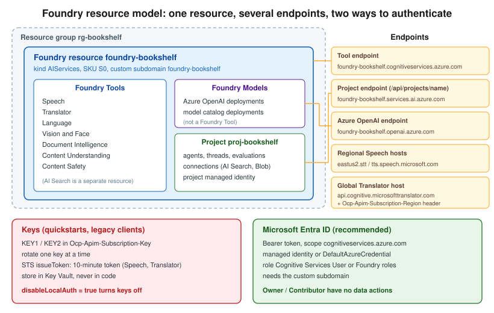

Resources, Endpoints and Authentication
|
This content was generated with the assistance of AI and should be verified against the official documentation before being relied on in production. |
This page targets Azure CLI 2.90.0, Bicep 0.47.16 and the Microsoft.CognitiveServices/accounts API version
2025-06-01. Code samples use azure-identity 1.26.0 (Python), Azure.Identity 1.21.0 (.NET) and
com.azure:azure-identity 1.18.7 (Java), checked on 2026-10-06.
Every Foundry Tool call needs two things: an endpoint to send the request to and a credential to prove who is calling. Both come from the Azure resource you create first. This page covers which resource to create, which endpoint each tool uses, and how to authenticate without keys.
The examples use these shell variables:
RG=rg-bookshelf
LOCATION=eastus2
FOUNDRY=foundry-bookshelfSource: Create a Foundry resource
Resource kinds

The --kind of a Microsoft.CognitiveServices/accounts resource decides which APIs it exposes:
| Kind | What it is |
|---|---|
|
The recommended kind. One endpoint and one set of keys for Azure OpenAI and other Foundry Models, plus all the
Foundry Tools: Speech, Translator, Language, Vision, Document Intelligence, Content Understanding and Content
Safety. It can contain projects, which group agents, evaluations and connections. Bookshelf’s
|
|
The older multi-service resource. It exposes the tools but not Foundry Models or projects. Convert it in place (see below) instead of creating new ones. |
Single-service kinds |
One tool per resource. |
A single-service resource is still required in a few cases:
-
commitment tiers (prepaid monthly capacity) are bought per single-service resource
-
some containers, especially disconnected ones, must be billed against a single-service resource
-
a few features, such as Immersive Reader, still need their own kind
You can convert a legacy multi-service resource (for example an older aisvc-bookshelf) to a Foundry resource
without changing its endpoint or keys:
az cognitiveservices account update \
--name aisvc-bookshelf \
--resource-group "$RG" \
--kind AIServicesIn the Azure portal
-
Open the Foundry portal at
https://ai.azure.comand select Create new → Foundry resource. Alternatively, in the Azure portal search for Foundry and select Create a Foundry resource. -
Basics: subscription, resource group
rg-bookshelf, namefoundry-bookshelf, region East US 2. The name becomes the custom subdomain. -
Project: accept the default project name or enter
proj-bookshelf. -
Networking: leave All networks for now. Networking, Security and Responsible AI adds a private endpoint later.
-
Identity: turn on the System assigned managed identity. Customer-managed keys and some tools need it.
-
Review + create, then Create.
With the Azure CLI
az cognitiveservices account create \
--name "$FOUNDRY" \
--resource-group "$RG" \
--location "$LOCATION" \
--kind AIServices \
--sku S0 \
--custom-domain "$FOUNDRY" \
--assign-identity \
--allow-project-management \
--yes
az cognitiveservices account project create \
--name "$FOUNDRY" \
--resource-group "$RG" \
--project-name proj-bookshelf \
--location "$LOCATION"
az cognitiveservices account list-kinds --output tableEndpoints
| Endpoint | Form | Used by |
|---|---|---|
Tool endpoint |
|
Language, Vision, Document Intelligence, Content Understanding, Content Safety, Speech REST (batch, fast transcription), document translation, and the SDKs of all of these. |
Project endpoint |
|
The Foundry SDK ( |
Azure OpenAI endpoint |
|
Foundry Models through the OpenAI-compatible API. Not a Foundry Tool, but on the same resource. |
Regional Speech hosts |
|
Older Speech SDK and REST samples that use a key and region instead of an endpoint. |
Global Translator host |
|
Text translation. With a key, also send |
Custom subdomains
A custom subdomain (--custom-domain) gives the resource the <name>.cognitiveservices.azure.com host
name. It is required for Microsoft Entra ID authentication and for virtual networks, and it cannot be changed
or removed later. Pick the name with care. Speech is the exception: it still accepts the regional host names for
key-based calls, but needs the custom subdomain for Entra ID and private endpoints.
Source: Custom subdomain names
Authentication
Keys
Every resource has two keys, KEY1 and KEY2. Send one in the Ocp-Apim-Subscription-Key header. Two keys let
you rotate without downtime: move clients to KEY2, regenerate KEY1, move them back, then regenerate KEY2.
Store keys in Key Vault, never in code.
az cognitiveservices account keys list --name "$FOUNDRY" --resource-group "$RG"
KEY=$(az cognitiveservices account keys list --name "$FOUNDRY" --resource-group "$RG" --query key1 -o tsv)
az cognitiveservices account keys regenerate \
--name "$FOUNDRY" --resource-group "$RG" --key-name Key2
curl -s "https://$FOUNDRY.cognitiveservices.azure.com/language/:analyze-text?api-version=2024-11-01" \
-H "Ocp-Apim-Subscription-Key: $KEY" \
-H "Content-Type: application/json" \
-d '{"kind":"LanguageDetection","analysisInput":{"documents":[{"id":"1","text":"Hola mundo"}]}}'Source: Rotate keys
STS token exchange
Speech and Translator also accept a short-lived bearer token exchanged for a key. The token lasts 10 minutes. This is useful for browser or mobile clients, because the key stays on your server:
TOKEN=$(curl -s -X POST \
"https://$FOUNDRY.cognitiveservices.azure.com/sts/v1.0/issueToken" \
-H "Ocp-Apim-Subscription-Key: $KEY" -H "Content-Length: 0")Microsoft Entra ID and roles
With Entra ID the caller gets an access token for the scope https://cognitiveservices.azure.com/.default and
sends it as Authorization: Bearer <token>. The identity needs a data-plane role on the resource:
| Role | Grants |
|---|---|
|
Call any tool’s data-plane APIs and list keys. The usual role for an application. |
Service-specific roles |
For example |
Foundry roles: |
The Foundry portal’s roles, being renamed to Foundry User, Foundry Project Manager, Foundry Account Owner and Foundry Owner. User can build and call agents and models in a project. The others add project and resource management. |
Owner and Contributor are control-plane roles. They can create the resource and read its keys, but they
have no data actions, so a token for a user with only Owner gets 401 from a tool endpoint.
DefaultAzureCredential in code
DefaultAzureCredential tries the managed identity in Azure and your developer sign-in (Azure CLI, Visual Studio,
IntelliJ) locally, so the same code runs in both places.
from azure.identity import DefaultAzureCredential
from azure.ai.textanalytics import TextAnalyticsClient
client = TextAnalyticsClient(
endpoint="https://foundry-bookshelf.cognitiveservices.azure.com/",
credential=DefaultAzureCredential(),
)
print(client.detect_language(["Hola mundo"])[0].primary_language.name)using Azure.AI.TextAnalytics;
using Azure.Identity;
var client = new TextAnalyticsClient(
new Uri("https://foundry-bookshelf.cognitiveservices.azure.com/"),
new DefaultAzureCredential());
DetectedLanguage language = client.DetectLanguage("Hola mundo");
Console.WriteLine(language.Name);import com.azure.ai.textanalytics.TextAnalyticsClient;
import com.azure.ai.textanalytics.TextAnalyticsClientBuilder;
import com.azure.identity.DefaultAzureCredentialBuilder;
TextAnalyticsClient client = new TextAnalyticsClientBuilder()
.endpoint("https://foundry-bookshelf.cognitiveservices.azure.com/")
.credential(new DefaultAzureCredentialBuilder().build())
.buildClient();
System.out.println(client.detectLanguage("Hola mundo").getName());Assign the role to the identity that runs the code:
az role assignment create \
--assignee "$(az ad signed-in-user show --query id -o tsv)" \
--role "Cognitive Services User" \
--scope "$(az cognitiveservices account show --name "$FOUNDRY" --resource-group "$RG" --query id -o tsv)"Source: Assign a role
Disabling local authentication
Once every client uses Entra ID, turn keys off. disableLocalAuth: true makes the resource reject
Ocp-Apim-Subscription-Key and STS tokens. The built-in Azure Policy Azure AI Services resources should have key
access disabled (disable local authentication) audits or denies resources that still allow keys.
az resource update \
--ids "$(az cognitiveservices account show --name "$FOUNDRY" --resource-group "$RG" --query id -o tsv)" \
--set properties.disableLocalAuth=trueSource: Disable local authentication
Bookshelf: keyless Foundry resource in Bicep
catalog-api and orders-api run in Container Apps, each with its own user-assigned managed identity:
id-catalog-api and id-orders-api, as in the rest of the Azure section. The Bicep below creates
foundry-bookshelf with keys disabled, the proj-bookshelf project, and a Cognitive Services User role
assignment for both identities.
param location string = resourceGroup().location
param principalIds array // principal IDs of id-catalog-api and id-orders-api
resource foundry 'Microsoft.CognitiveServices/accounts@2025-06-01' = {
name: 'foundry-bookshelf'
location: location
kind: 'AIServices'
sku: { name: 'S0' }
identity: { type: 'SystemAssigned' }
properties: {
customSubDomainName: 'foundry-bookshelf'
disableLocalAuth: true
allowProjectManagement: true
publicNetworkAccess: 'Enabled'
}
}
resource project 'Microsoft.CognitiveServices/accounts/projects@2025-06-01' = {
parent: foundry
name: 'proj-bookshelf'
location: location
identity: { type: 'SystemAssigned' }
properties: {}
}
var cognitiveServicesUser = subscriptionResourceId(
'Microsoft.Authorization/roleDefinitions', 'a97b65f3-24c7-4388-baec-2e87135dc908')
resource userRoles 'Microsoft.Authorization/roleAssignments@2022-04-01' = [for principalId in principalIds: {
scope: foundry
name: guid(foundry.id, principalId, cognitiveServicesUser)
properties: {
roleDefinitionId: cognitiveServicesUser
principalId: principalId
principalType: 'ServicePrincipal'
}
}]
output endpoint string = foundry.properties.endpointDeploy it with:
CATALOG_PRINCIPAL=$(az identity show --name id-catalog-api --resource-group "$RG" --query principalId -o tsv)
ORDERS_PRINCIPAL=$(az identity show --name id-orders-api --resource-group "$RG" --query principalId -o tsv)
az deployment group create \
--resource-group "$RG" \
--template-file foundry.bicep \
--parameters principalIds="[\"$CATALOG_PRINCIPAL\",\"$ORDERS_PRINCIPAL\"]"Clean up
az cognitiveservices account delete --name "$FOUNDRY" --resource-group "$RG"
az cognitiveservices account purge --name "$FOUNDRY" --resource-group "$RG" --location "$LOCATION"A deleted resource is soft-deleted for 48 hours and keeps its custom subdomain reserved. Purge it to reuse the name straight away.
Related pages
-
Identity and Access covers managed identities and Azure RBAC in general.
-
Key Vault and Secrets covers storing keys when you still need them.
-
Container Apps covers the managed identity on
catalog-api. -
Infrastructure as Code covers Bicep deployment in general.
-
Networking, Security and Responsible AI puts this resource behind a private endpoint.